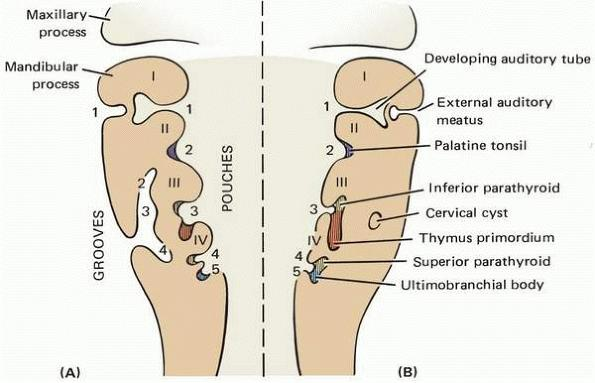

Illustration of the first pharyngeal arch development
Development of the second pharyngeal pouch

Structure of the branchial cleft during embryogenesis
Migration of thyroid from the ultimobranchial body
Illustration of the first pharyngeal arch development
Development of the second pharyngeal pouch
Structure of the branchial cleft during embryogenesis
Migration of thyroid from the ultimobranchial body
Pharyngeal clefts are transient ectodermal grooves separating the pharyngeal arches in the developing embryo.
Positioned laterally on the embryonic pharynx, between successive arches (e.g., first cleft between arches 1 and 2).
| Cleft | Derivatives |
|---|---|
| First cleft | Develops into the external auditory meatus and tympanic membrane. |
| Second to fourth clefts | Obliterated by overgrowth of the second arch, forming a temporary cervical sinus; incomplete fusion may result in branchial cysts or fistulae. No persistent adult structures from these. |
Pharyngeal pouches are endodermal outpocketings from the primitive pharynx, synchronized with arch and cleft development.
Situated on the inner pharyngeal wall, as invaginations between arches (e.g., first pouch between arches 1 and 2).
| Pouch | Derivatives |
|---|---|
| First pouch | Forms tympanic cavity, mastoid air cells, and auditory (Eustachian) tube. |
| Second pouch | Gives rise to palatine tonsil epithelium and lymphoid tissue. |
| Third pouch | Dorsal wing yields inferior parathyroid gland; ventral wing forms thymus, both migrating inferiorly (thymus to mediastinum, parathyroid gland). |
| Fourth pouch | Dorsal wing produces superior parathyroid gland; ventral wing forms ultimobranchial body, incorporating into thyroid as calcitonin-secreting parafollicular C cells. |
| Fifth pouch | Rudimentary; contributes to ultimobranchial body. |